直近1週間の人気フィード
はてなブックマーク数を元に新着優先で並べ替え
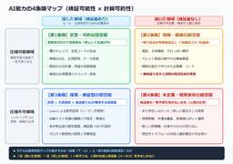
なぜAIは超難問を解けるのに、あなたの現場では“綺麗なゴミ”を量産するのか？ - サッとぶ 740 Menthas #all
740 Menthas #all
最近のAI関連のニュースでは、人間離れした成果が次々に出ている。 167年間どの天才数学者も解けなかったリーマン予想をAnthropicのClaudeが約1,700万行のコードで形式証明したかと思えば、OpenAIのGPT-6.2 Astraは200年以上も作者不明だった1808年のスケッチブックの描き手をたった22分で突き止めた。さらに新興企業のArchitect Labsは、AIに非ノイマン型
17時間前
なぜAIは超難問を解けるのに、あなたの現場では“綺麗なゴミ”を量産するのか？ - サッとぶ 740 はてなブックマーク - 人気エントリー - テクノロジー
最近のAI関連のニュースでは、人間離れした成果が次々に出ている。 167年間どの天才数学者も解けなかったリーマン予想をAnthropicのClaudeが約1,700万行のコードで形式証明したかと思えば、OpenAIのGPT-6.2 Astraは200年以上も作者不明だった1808年のスケッチブックの描き手をたった22分で突き止めた。さらに新興企業のA...
1日前

人類はまだWin+Shift+Tで画像に表示された文字をOCRでコピー出来ることを知らない…ただしMicrosoft PowerToysを入れる必要がある 138 はてなブックマーク - 人気エントリー - テクノロジー
はてなブックマーク - 人気エントリー - テクノロジー
なゆえんじん @nayuengin 人類はまだ、「 Windowsキー + Shift + T 」で、本来文字としてコピーできないはずの画像をOCRで無理やり文字列としてコピーして使用できるという事実を意外と知らない 2026-11-28 12:00:03 なゆえんじん @nayuengin 補足：これはPowerToys（Microsoft公式の無料ツール）のText Extractorの機能.
6時間前
[ITmedia News] 「時給1280円?」「在宅勤務」 ローソンが募集する「アバターオペレーター」という謎のお仕事 194ITmedia 総合記事一覧
ローソンは10月16日、在宅でアバターを操作して接客する「ローソンアバターオペレーター」の募集を始めた。導入店舗の数や効果、接客をAIではなく人が担う理由などを同社に聞いた。
1日前

データサイエンティストの Claude Code 活用術-Claude Code にデータ分析をさせる方法論 110 はてなブックマーク - 人気エントリー - テクノロジー
はてなブックマーク - 人気エントリー - テクノロジー
Claude Codeによってデータサイエンティスト業務を効率化する方法論をまとめました。プロジェクトナレッジを溜める方法論から、ナレッジベースの作り方、AI時代のレビューしやすい分析コードのまとめかた（Claude.md）など多岐にわたって筆者が実践している方法論を書いています。
15時間前

通勤流出入マップ 171はてなブックマーク - 人気エントリー - テクノロジー
2020年の国勢調査に基づき、市区町村間の通勤者（15歳以上、男女計）を表示します。「同じ市区町村内で通勤」は、住んでいる市区町村内の自宅以外の職場で働く人の数です。 ランキングと矢印 流入は他の市区町村から選んだ市区町村に通勤する人数、流出は選んだ市区町村から他の市区町村に通勤する人数です。差分は流入...
1日前

[ITmedia News] MCPに新機能「Skills over MCP」登場 ツールとの接続だけでなく使い方のスキルもMCP経由で提供 170ITmedia 総合記事一覧
AIエージェントと外部ツールを接続する業界標準となっているMCP（Model Context Protocol）に、新機能として「Skills over MCP」がβ版として追加されました。
2日前

生成AIは知的労働能力を「ドーピング」することはできるが、「定着」させることはできない - 渋谷駅前で働くデータサイエンティストのブログ 94 はてなブックマーク - 人気エントリー - テクノロジー
はてなブックマーク - 人気エントリー - テクノロジー
先日のことですが、以下のNature Human Behavior掲載論文がSNSで話題になっているのを見かけました。 最初に見た時はそれほど反応が伸びていなかったんですが、後日メディアで取り上げられたことで再度バズっていたのでした。 既に様々な媒体で解説記事が出ているので何番煎じになるかもはや分からない有様ですが、自分...
8時間前

古い PHP / Laravel の脆弱性対応は、Rector と AI でだいたい簡単に終わる 93 はてなブックマーク - 人気エントリー - テクノロジー
はてなブックマーク - 人気エントリー - テクノロジー
「脆弱性対応をしてほしい」と頼まれたとき、古い PHP や Laravel のシステムでまずやるべきことは、個別のパッチ当てではありません。サポートが切れたバージョンには、もうセキュリティ修正が出ないからです。脆弱性対応の本体はサポートされているバージョンまで上げることです。 上げると聞くと大仕事に思えますが、...
19時間前

AIでしか生み出せない価値とは何か ― 4つの壁と8つの価値創造 - ニューロサイエンスとマーケティングの間 - Between Neuroscience and Marketing 88 はてなブックマーク - 人気エントリー - テクノロジー
はてなブックマーク - 人気エントリー - テクノロジー
Meguro River, in the uppermost reaches of the Shimanto River, Shikoku, Japan. Leica M10-P, Summilux-M 50mm f/1.4 ASPH., RAW. AIはすごい、これを感じていない人は僕の周りではもう殆どいない。 ちょっと指示を出せばメールの返信を書いてくれる。かなり面倒な分析も、こういうことをや
18時間前
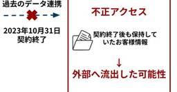
[ITmedia News] 止まらないKARTE漏えい 契約終了後「削除されたはず」のデータ流出相次ぐ 「人的オペレーションと管理の不備」 135ITmedia 総合記事一覧
プレイドによると、契約終了後のデータは「利用規約に則り適切に削除されるべき」だったが、「人的オペレーションおよび管理の不備」により保管されたままだったケースがあるという。
2日前
[ITmedia News] そばチェーン「ゆで太郎」は、なぜ個人情報を「持たない」と決めた？ 8年続いたバースデークラブ終了の理由を社長に聞いた 73ITmedia 総合記事一覧
ゆで太郎システムは、個人情報の漏えいリスクを理由に、約4000人が登録する「バースデークラブ」の終了を決めた。8年続けた制度を廃止する理由や、個人情報を持たずに顧客との関係を築く戦略を社長に聞いた。
17時間前

1Passwordへの不正アクセスについてまとめてみた 183 piyolog
piyolog
2026年11月25日、1Passwordは従業員のGitHubアカウントへの不正アクセスにより、バックエンドのシステムから一部の顧客のアカウント情報が取得されたと公表しました。ここでは関連する情報をまとめます。公表後も顧客への通知を継続1Passwordは11月19日、従業員の業務用GitHubアカウントに攻撃者がアクセスした兆候を受け、調査を開始。6日後の11月25日(現地時間)、ブログと公式
2日前
作業を止めずに進めるClaude Codeの/btw・/fork・/rewindなどの使い分け 101 はてなブックマーク - 人気エントリー - テクノロジー
Claude Codeに実装やレビュー対応を任せていると、作業の途中でちょっと別のことを聞きたくなったり、別の案も試したくなったりすることがあります。 また、テストやCIが終わるのを待っている間に手が止まってしまうことも多いです。 そういった時に使えるコマンドがClaude Codeにはいくつか用意されていますが、/btw、/...
1日前
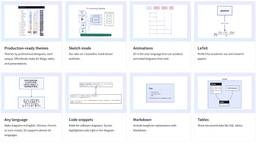
シンプルな構文で美しい図を自動生成する「D2」が進化、非営利化で独自レイアウトエンジンもオープンソース化 99 GIGAZINE
テキストで図形や矢印の関係を記述するだけで図を自動生成できる「D2」は、2022年に基本的な使い方をレビューしました。その後は手描き風のデザインやアニメーション、ターミナルでも表示できるASCII出力などに対応し、図の表現方法が広がっています。2026年9月には運営体制が非営利に切り替わり、独自の自動配置エンジンもオープンソース化されたので、追加された機能を中心に改めて使ってみました。続きを読む.
1日前

ガバメントAIで試用する国内大規模言語モデル（LLM）の公募結果 96 AI Security Daily Digest
デジタル庁がガバメントAIで試用する国内大規模言語モデル（LLM）の公募結果を公表した。政府機関におけるLLM導入・調達プロセスの透明性確保に関わる政策動向であり、政府AIのガバナンスおよびセキュリティ基準に関連する。Source: デジタル庁policy governance regulation
2日前

AWSのAI-DLC v2に学ぶ AIにドメイン境界を守らせる設計 59 Menthas #all
AIに正しさの基準を与えるのはドメインモデルです。今日はAWSのAI-DLC v2を解剖し、まず標準の基盤だけでタスク管理APIを作らせます。そのうえで自作プラグインを通じ、設計の形・入口の境界・層の依存の向きがどう変わったかを実例で整理します。検証対象は1つのAPIの中までとし、今後の拡張余地と人間が…
16時間前
古い PHP / Laravel の脆弱性対応は、Rector と AI でだいたい簡単に終わる 93 Zennのトレンド
「脆弱性対応をしてほしい」と頼まれたとき、古い PHP や Laravel のシステムでまずやるべきことは、個別のパッチ当てではありません。サポートが切れたバージョンには、もうセキュリティ修正が出ないからです。脆弱性対応の本体はサポートされているバージョンまで上げることです。 上げると聞くと大仕事に思えますが、今は Rector で機械的に書き換え、残りを AI に直させれば、たいていのシステムで
1日前
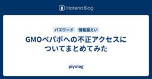
GMOペパボへの不正アクセスについてまとめてみた - piyolog 58 はてなブックマーク - 人気エントリー - テクノロジー
2026年11月27日、GMOペパボは「ロリポップ！レンタルサーバー」などで第三者による不正アクセスが確認され、顧客情報が漏えいしたことが判明したと公表しました。ここでは関連する情報をまとめます。 データ分析基盤を経由した顧客情報の持ち出し GMOペパボは原因について、サービス利用者のWebサイトではなく自社の内部...
15時間前
GMOペパボへの不正アクセスについてまとめてみた 58 piyolog
2026年11月27日、GMOペパボは「ロリポップ！レンタルサーバー」などで第三者による不正アクセスが確認され、顧客情報が漏えいしたことが判明したと公表しました。ここでは関連する情報をまとめます。データ分析基盤を経由した顧客情報の持ち出しGMOペパボは原因について、サービス利用者のWebサイトではなく自社の内部システムへの不正アクセスだとしている(出典: 2)。攻撃と対処の流れは次のとおり(出典:
16時間前
GMOペパボへの不正アクセスについてまとめてみた 58 AI Security Daily Digest
GMOペパボが運営する「ロリポップ！レンタルサーバー」等の複数サービスで、第三者による不正アクセスにより約51万6千件の顧客情報が漏えいした。攻撃者は認証情報を使ってデータ分析基盤に侵入し情報を外部に持ち出したとされ、同社のAI関連サービス（AIホームページ・AIエージェントクラウド）も対象に含まれる。Source: piyologincident agent-security
16時間前
パスキーは最強で美しいよ、正しく実装すればね 56 はてなブックマーク - 人気エントリー - テクノロジー
はじめに 近年、パスワード漏洩やフィッシングによる不正アクセス、さらには証券口座の乗っ取りといった認証にまつわるセキュリティ事件が後を絶ちません。こうしたニュースが出るたびに、「パスワードを使い回さないようにしよう」「SMS や認証アプリによる 2 段階認証を設定しよう」といった対策記事や呼びかけを目に...
10時間前
パスキーは最強で美しいよ、正しく実装すればね 56 Zennのトレンド
近年、パスワード漏洩やフィッシングによる不正アクセス、さらには証券口座の乗っ取りといった認証にまつわるセキュリティ事件が後を絶ちません。こうしたニュースが出るたびに、「パスワードを使い回さないようにしよう」「SMS や認証アプリによる 2 段階認証を設定しよう」といった対策記事や呼びかけを目にします。 しかし、現在の攻撃手法はそれよりも一歩先を行っており、偽サイトを中継してリアルタイムに認証情報を
19時間前

人間の生きた細胞にビートルズの歌詞を保存＆細胞分裂後も正確に読み取ることに成功 84 GIGAZINE
アメリカのテキサス大学ダラス校の研究チームが人間の生きた細胞にデジタルデータを保存したうえで、第三者によるデータの読み取りを困難にする技術を開発したと発表しました。研究チームはビートルズの楽曲「レット・イット・ビー」の歌詞をDNAに記録し、細胞分裂を繰り返した後も正確に読み取れることを確認しています。続きを読む...
2日前
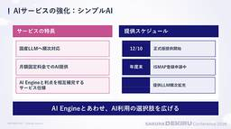
さくらインターネット、AIを月額固定料金で提供する「シンプルAI」発表、システムへの組み込み用途を想定 140 Publickey
Publickey
さくらインターネットは11月25日と26日の2日間、大規模イベント「SAKURA DEKIRU Conference 2026」を都内で開催。2日目の基調講演で、新サービスとして月額固定料金でAIを提供する「シンプルAI」を発表しました。 ...
2日前

24KBの「LLM専用OS」が登場 全てアセンブリでLinuxを排し、llama.cppより最大54%高速 138 テクノエッジ TechnoEdge
テクノエッジ TechnoEdge
言語モデル「Qwen3-0.6B」を動かすためだけのOSが登場しました。全編アセンブリ製で本体は約24KB、Linuxを使わず0.1秒未満で起動します。作者の計測ではllama.cppより最大54%高速です。
3日前
24KBの「LLM専用OS」が登場 全てアセンブリでLinuxを排し、llama.cppより最大54%高速 | テクノエッジ TechnoEdge 138 AI情報RSS
言語モデル「Qwen3-0.6B」を動かすためだけのOSが登場しました。全編アセンブリ製で本体は約24KB、Linuxを使わず0.1秒未満で起動します。作者の計測ではllama.cppより最大54%高速です。
3日前
Linuxカーネルのバグ「TCPanic」を発見、TCP通信のみでホストが停止する脆弱性 | Ikotas Labs 76 Menthas #all
Menthas #all
Ikotas Labsは、TCP通信のみでホスト全体が停止する可能性のあるLinuxカーネルのバグを独自に発見しました。Linux 7.3.4にはこの問題の修正が含まれています。
1日前

カビの生えた食品はカビの部分だけ切り除けば食べられるのか？ 76 GIGAZINE
カビの生えた食品を誤って食べてしまったらどうなるのか、一部にカビが生えていた場合はそこを切り取れば問題なく食べられるのかといった疑問について、教育系YouTubeチャンネルのTED-Edが解説しています。続きを読む...
1日前
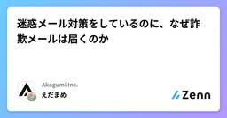
迷惑メール対策をしているのに、なぜ詐欺メールは届くのか 122 Zennのトレンド
つい先日、知り合いがメールの受け取りを「キャッチオール」にしてみたそうです。 キャッチオールとは？ 特定の宛先（ローカル部）を決めず、ドメイン全体に届いたメールをまるごと受け取る設定のこと。 すると、1 時間も経たないうちに迷惑メールが数十通届き、しかもそのすべてが詐欺メールだったとのこと。 「キャッチオールでも迷惑メールフィルターや SPF などの認証は動いているはずなのに、なぜすり抜けて受信箱
2日前

自宅PCを格安ファイルサーバーとして構築してみた 64 はてなブックマーク - 人気エントリー - テクノロジー
1. はじめに ポート開放なしで、外からアクセスできる自宅ファイルサーバーを構築したので、構成をご紹介します。 この記事は、こんな人に向けています。 外部から接続できる自宅サーバーをなるべく安く構築したいが、ポート開放や認証まわりが不安な人 2. モチベーション PC が余っていた 外から接続できるファイルサー...
1日前
自宅PCを格安ファイルサーバーとして構築してみた 64 Zennのトレンド
ポート開放なしで、外からアクセスできる自宅ファイルサーバーを構築したので、構成をご紹介します。 この記事は、こんな人に向けています。 外部から接続できる自宅サーバーをなるべく安く構築したいが、ポート開放や認証まわりが不安な人 PC が余っていた 外から接続できるファイルサーバーが欲しかった せっかくなら認証周り（Auth0）も触ってみたかった ※ 記事執筆時点での価格 外から入る経路を作る主な手段
2日前
Androidアプリ開発者はまもなく自身の住所を公開しなければならなくなる 62 GIGAZINE
GoogleはEUのデジタルサービス法(DSA)に対応するため、2027年からAndroidアプリ開発者に電話番号と住所の公開を求めると発表しました。「個人開発者の間でプライバシーへの懸念が広がっている」とテクノロジーメディアのThe Vergeは報じています。続きを読む...
2日前
[ITmedia News] 顧客情報を守るため、売上15％の自社ECを閉店 ドールメーカーが明かした「決断」の背景
61ITmedia 総合記事一覧
個人情報保護のため、全社売上高の約15％を占める自社ECサイトの閉店を決めたアゾンインターナショナル。AIによるサイバー攻撃の高度化をどう捉え、なぜ個人情報を「持たない」方針に転換したのか。経営陣に聞いた。
1日前
通勤流出入マップ 59はてなブックマーク - 人気エントリー - テクノロジー
2020年の国勢調査に基づき、市区町村間の通勤者（15歳以上、男女計）を表示します。「同じ市区町村内で通勤」は、住んでいる市区町村内の自宅以外の職場で働く人の数です。 ランキングと矢印 流入は他の市区町村から選んだ市区町村に通勤する人数、流出は選んだ市区町村から他の市区町村に通勤する人数です。差分は流入...
1日前
作業を止めずに進めるClaude Codeの/btw・/fork・/rewindなどの使い分け 101 Zennのトレンド
Claude Codeに実装やレビュー対応を任せていると、作業の途中でちょっと別のことを聞きたくなったり、別の案も試したくなったりすることがあります。 また、テストやCIが終わるのを待っている間に手が止まってしまうことも多いです。 そういった時に使えるコマンドがClaude Codeにはいくつか用意されていますが、/btw、/branch、/forkなど名前が似ていて最初はどれを使えばいいか迷いま
2日前
Devin Bot に毎朝のパフォーマンス改善を任せてみた | kickflow Tech Blog 58 企業テックブログRSS
企業テックブログRSS
毎朝規則正しく巡回してくれる Devin こんにちは。エンジニアの芳賀です。 ループエンジニアリング、流行ってますね！ さて、2026年11月17日、Cognition が Devin の新機能「Devin Bots」を発表しました。 ひと言でいうと、タスク単位ではなく成果単位で Devin に仕事を任せる機能です。 ということで、発表を見て早速 Bot を1体作り、kickflow のリポジトリ
1日前
[ITmedia Mobile] 初期iPhoneは「携帯電話としてあり得ない」と思った ガングロギャルが教えてくれた“技術普及の絶対条件”
58ITmedia 総合記事一覧
かつてガジェットオタクだった筆者が、ギャル向けコンテンツ開発を経て「使いやすさ」の重要性に開眼した。iPhoneの登場には驚かされたが、初期は誰もが使う上で課題が多かった。AIの台頭をへた今、モバイルは革新的な技術から生活に不可欠な社会インフラへと進化した。
1日前

CTOからエンジニアへ 34 はてなブックマーク - 人気エントリー - テクノロジー
YAPC::Tokyo 2026 https://blog.yapcjapan.org/entry/2026/11/13/182428
9時間前

MCPに新機能「Skills over MCP」登場。ツールとの接続だけでなく使い方のスキルもMCP経由で提供 170 Publickey
AIエージェントと外部ツールを接続する業界標準となっているMCP（Model Context Protocol）に、新機能として「Skills over MCP」がβ版として追加されました。 Skills over MCPを利用することで、...
3日前
AIが書いたコードを、「わかる」コードに変える 87 gihyo.jp
gihyo.jp
本連載は2026年9月刊行の『エンジニアのAI壁打ち実践術』から一部、抜粋・編集してお届けします。第5回目は、AIが書いたコードの仕組みを、自分の言葉で説明できる状態にする方法について解説します。
3日前

CQRS+ES実践ガイド / CQRS+ES Practice Guide 31 はてなブックマーク - 人気エントリー - テクノロジー
JJUG CCC 2026 Fall の講演資料です CQRS+ES を実践するために必要な、実装の手法からモデリング、各種落とし穴の対策等をお話しています イベント概要：https://jjug.doorkeeper.jp/events/199505 CQRS+ES実践ガイド：https:/…
9時間前
CQRS+ES実践ガイド / CQRS+ES Practice Guide 31 Programming - Speaker Deck
JJUG CCC 2026 Fall の講演資料ですCQRS+ES を実践するために必要な、実装の手法からモデリング、各種落とし穴の対策等をお話していますイベント概要：https://jjug.doorkeeper.jp/events/199505CQRS+ES実践ガイド：https://link.amazon/B08LW2qdD# URLYouTube: https://www.youtube.
13時間前

エンジニア2人・8ヶ月で新規事業を立ち上げる──「フルAI開発」のふりかえり | コネヒト開発者ブログ 84 企業テックブログRSS
エンジニア2人・8ヶ月で新規事業を立ち上げる──「フルAI開発」のふりかえり こんにちは、コネヒト株式会社で働く北島と申します。社内ではしょうぽんと呼ばれています。 2026年10月、ママリの新規事業として「ママリレシートエール」を本格リリースしました。2月の立ち上げから約8ヶ月、営業・企画・デザイン・開発が横断して取り組んだプロジェクトです。 開発はコアメンバーのエンジニア2名で担当し、設計から
3日前
デジタル庁職員による生成AIの利用実績に関する資料を掲載しました 46 AI Security Daily Digest
デジタル庁が職員による生成AIの利用実績に関する資料を公開した。政府機関における生成AI活用の実態を示す情報公開であり、公共部門でのAI利用ガバナンスおよびセキュリティ管理の在り方を考える上での基礎資料となる。Source: デジタル庁policy governance
2日前

人類は350年前にどうやって「光にも速さがある」と気づいたのか？ 26 GIGAZINE
光の速さは真空中で秒速約30万kmであることが知られていますが、光が移動するのに時間がかかることが観測によって初めて実証されたのは1676年のことです。現代のような精密な測定機器が存在しなかった350年前に、デンマークの天文学者であるオーレ・レーマーがどのようにして光の速さが有限であることを突き止めたのかについて、科学メディアのScience Norwayが解説しています。続きを読む...
17時間前

AWS WAF の新料金（simplified pricing）と旧料金を試算して比べてみた | DevelopersIO 41 Menthas #all
Menthas #all
AWS WAF の新料金（simplified pricing）は、リソース、リクエスト、プレミアムリクエストの3項目で決まります。CloudFront 1 つを保護する構成で新料金と旧料金を試算すると、プレミアム保護を使わない 3 種類のルール構成では新料金が互いに同額で、どれも旧料金より安くなりました。
2日前
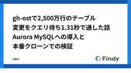
gh-ostで2,500万行のテーブル変更をクエリ待ち1.31秒で通した話：Aurora MySQLへの導入と本番クローンでの検証 - Findy Tech Blog 40 Menthas #all
Menthas #all
こんにちは、ファインディでFindy Team+の開発をしているrobinです。 Findy Team+のバックエンドには数千万〜数億行を持つ巨大テーブルが複数あります。これらのテーブルを変更する手段はオンラインDDLしかなく、変更中の負荷をコントロールできませんでした。そこでGitHub製OSSのgh-ostを導入したところ、2,500万行のテーブルを、クエリの待ち時間1.31秒・エラー0件に抑
2日前
gh-ostで2,500万行のテーブル変更をクエリ待ち1.31秒で通した話：Aurora MySQLへの導入と本番クローンでの検証 | Findy Tech Blog 40 企業テックブログRSS
こんにちは、ファインディでFindy Team+の開発をしているrobinです。 Findy Team+のバックエンドには数千万〜数億行を持つ巨大テーブルが複数あります。これらのテーブルを変更する手段はオンラインDDLしかなく、変更中の負荷をコントロールできませんでした。そこでGitHub製OSSのgh-ostを導入したところ、2,500万行のテーブルを、クエリの待ち時間1.31秒・エラー0件に抑
2日前

Docker HubのPHP公式イメージから自前ビルドへ移行 〜Debian移行と最適化で稼働Pod数を約25%削減〜 - COLOPL Tech Blog 25 Menthas #all
Menthas #all
こんにちは、サーバー基盤グループの駒崎です。 Google Kubernetes Engine（GKE）などコンテナ上で動く複数のゲームタイトル向けに、社内共通のPHPベースイメージを運用しています。インフラのCPU効率を基盤側から改善しようと手を入れた結果、Docker Hubの php 公式イメージをやめて、php.net のソースコードから自前でビルドする構成へ切り替えました。 この記事で伝
16時間前

さくさく作れる毎日を支える、AI 時代の開発環境 — 隔離・コンテキスト・ガードレール・検証の整理 | [はてなCMS] 電通総研 テックブログ 39 企業テックブログRSS
企業テックブログRSS
コーディングエージェントと働く開発環境を、隔離基盤・コンテキスト設計・決定論的ガードレール・多層検証の四つの柱で整理した実践記事です。microVM 隔離・worktree 分離・フック・依存解析・異種モデル検証まで具体的に紹介します。
2日前

GitHub ActionsからPATもGitHub App Private Keyも駆逐する 39 Zennのトレンド
GitHub ActionsではGITHUB_TOKENで権限が足りない場合、PAT（Personal Access Token）やGitHub App Token（Installation Access Token）を使います。PATに比べるとGitHub App Tokenはだいぶマシですが、Private Keyの管理が課題になります。そこで GATES というソフトウェアを作ってみたので紹
2日前
GitHub Actions の lockfile と workflow 定義がずれたとき何が起こるのか - blog.re-taro.dev 23 はてなブックマーク - 人気エントリー - テクノロジー
はじめに GitHub Actions に workflow dependency lockfile が導入された。 .github/workflows/actions.lock に、workflow が依存する action とその commit SHA を記録しておく仕組みである。 lockfile と聞いてまず気になったのは、lockfile と workflow 定義がずれたときの挙動だ。
5時間前

Perlと歩む未来 - go-perl がつなぐPerlの過去と未来 - 23 はてなブックマーク - 人気エントリー - テクノロジー
自己紹介 • goccy [goss-ee] ( ごっしー ) • LayerX Inc. ( Platform Engineering / Enabling Group ) • YAPC との関わり ◦ 2012: Perl と出会い、 Perl を作る ◦ 2013: これからの Perl プロダクトのかたち • 主な Perl モジュール ◦ Compiler::Lexer: 高速な Per
13時間前

Anthropic、MCPサーバーがスキルを配信する「Skills over MCP」をパブリックベータ公開 ―Tasks、Elicitationの一般提供も開始 63 gihyo.jp
Anthropicは2026年11月24日、ClaudeおよびClaude Codeにおいて、MCPサーバーがスキルを配信できる「Skills over MCP」などの新機能の提供開始を発表した。
2日前
「日本語で」と指示しても英語に戻るClaude Codeに、Stopフックで対処してみた 61 Zennのトレンド
Claude Codeの指示ファイル（CLAUDE.md）に、返答は必ず日本語にするよう書いていました。 ところが、作業を続けているうちに英語が混じるように。ルールを広げても、同じことが繰り返されました。 そこで、指示を足すだけでなく、仕組みで対処することにしました。 今回は、その失敗と対策について紹介します。 普段から、AIが失敗するたびに、何が起きたのか、原因は何か、どうすれば再発を防げるのか
2日前
ISUCONの立ち上げから現在まで関わった15年、運営と引き継ぎの記録 - 941::blog 21 はてなブックマーク - 人気エントリー - テクノロジー
2011年に始まったISUCON。わたしは立ち上げからISUCON13まで運営の主担当をやってきました。2026年の開催でその運営からも退くことになり、無事にイベントも終わったのでキリがよいところで色々書き残しておきます。 15年もやっていると忘れていることも結構あって、今のうちに成り立ちや各回の運営や、引き継ぎの経緯を...
6時間前

君もユーザー体験バリデーターにならないか？UI品質を向上させるデザイン批評の技術 21 はてなブックマーク - 人気エントリー - テクノロジー
仕事や日常でUIに接した際に「なんだか変だな？」と思うことは誰でもあると思います。しかしそのUIになぜ違和感があるのか、どう改善したら良いのかを的確にフィードバックするにはデザイン批評の技術が必要です。従来は主にデザイナー同士で行われていたこの批評ですが、コーディングエージェントによるUI生成が身近にな…
12時間前
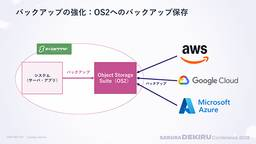
さくらインターネット、AWSやAzureなど他クラウドでバックアップ可能な新ストレージ「Object Storage Suite」（OS2）発表 33 Menthas #all
さくらインターネットは11月25日と26日の2日間、大規模イベント「SAKURA DEKIRU Conference 2026」を都内で開催。2日めの基調講演で、新たなストレージサービス「Object Storage Suite」（OS2）...
2日前

Windows・Mac・Linux・AndroidでファイルやテキストをLAN・インターネット経由で共有できる「flipflop」を使ってみた 20 Menthas #all
PCとスマートフォンの間でファイルを共有するにはクラウドストレージにアップロードしたり相手の端末を探したりする必要があります。こうした作業を簡略化し、一度ペアリングした端末同士でLANやインターネット、さらに実験的機能としてBluetooth経由でもファイル転送やテキスト共有ができる無料のオープンソースアプリが「flipflop」です。
16時間前

Obsidian公式の「エージェント向け」スキル集が登場 Vault操作法とファイル形式をひとまとめに 53ITmedia AI＋ 最新記事一覧
マークダウンエディタ「Obsidian」に「エージェント向けの公式コネクタ」機能が登場した。
2日前
Obsidian公式の「エージェント向け」スキル集が登場 Vault操作法とファイル形式をひとまとめに | ITmedia AI＋ 最新記事一覧 53AI情報RSS
マークダウンエディタ「Obsidian」に「エージェント向けの公式コネクタ」機能が登場した。
2日前

[ITmedia PC USER] XYZA、何度も自由に描き替え可能なカラーE Ink搭載スマートキーホルダー 29ITmedia 総合記事一覧
XYZAは、充電不要で利用可能な小型E Inkパネル内蔵スマートキーホルダーを発表した。
1日前
破産申請したAIチャットサービス「Character.AI」が2100万アカウント超の非公開の会話履歴を競売にかけようとしている 29 GIGAZINE
AIチャットサービス「Character.AI」が破産手続きの一環として、アメリカ国内の2100万アカウント超の会話履歴を売却しようとしていることが明らかになりました。売却対象には未成年者の会話履歴も含まれており、アメリカの42人の州司法長官が裁判所に売却計画を認めないよう求めています。続きを読む...
2日前

1時間で作るPerlOS: Yet Another Perl Computer 18 はてなブックマーク - 人気エントリー - テクノロジー
💡 の解説は後から読んでも構いません。まずは手を動かして、OSを完成させましょう。 用語 QEMU（キューエミュ）：CPUや周辺機器をソフトウェアで再現するエミュレータ。Quick Emulatorの略。QEMUは、実物のハードウェアがなくても、ソフトウェアでCPUや周辺機器の動きを再現できます。CPUの命令もソフトウェアで処理す...
10時間前

マゾの学力を測るマゾ共通テストが突如公開、軽い気持ちで挑戦したらガチで教養が試されてゾクゾク「思った以上に難しすぎる」 18 Menthas #all
令和8年度マゾ共通テスト みんな！！！『令和8年度マゾ共通テスト』の季節だ！！！ フォロワーマゾ達、共テの時間だよ() おいM女とM男はこれやれ 普通の共通テストもマゾ共通テストだろと呟きながら開いたら思ってたのと違った いつか気分転換にやる 軽い気持ちで挑戦したら意外にもガチのテストでビックリ
17時間前
1時間で作るPerlOS: Yet Another Perl Computer 18 Zennのトレンド
普段書いているC言語のプログラムで疑問に思ったことはないでしょうか？ #include で使われる標準ライブラリの実体は、どこにある？ main関数が呼ばれるまで、誰がどんなことをしている？ printf関数は、どうやって文字を画面に出している？ この記事では、組み込み用のPerl言語処理系「microperl」を自作OSに組み込み、起動するとPerlのシェルが使える「PerlOS」を作る手順を解
19時間前

もう他人ごとじゃないイベントソーシング：社会を支える既存システムへの部分適用 16 はてなブックマーク - 人気エントリー - テクノロジー
YAPC::Tokyo 2026 ライブコーディング・ハンズオン・40分 もう他人ごとじゃないイベントソーシング 社会を支える既存システムへの部分適用 全体を移行しなくても、既存の更新処理に記録を足せば、足した後の変更を説明できることを確かめます。題材は架空の動物病院の来院管理です。
12時間前
Docker HubのPHP公式イメージから自前ビルドへ移行 〜Debian移行と最適化で稼働Pod数を約25%削減〜 | COLOPL Tech Blog 25 企業テックブログRSS
こんにちは、サーバー基盤グループの駒崎です。 Google Kubernetes Engine（GKE）などコンテナ上で動く複数のゲームタイトル向けに、社内共通のPHPベースイメージを運用しています。インフラのCPU効率を基盤側から改善しようと手を入れた結果、Docker Hubの php 公式イメージをやめて、php.net のソースコードから自前でビルドする構成へ切り替えました。 この記事で伝
2日前

飲食店の“AI商品画像”は景品表示法違反にならないの？ 弁護士の見解
40ITmedia AI＋ 最新記事一覧
飲食店のメニューにAIで生成した画像を使用した場合を例に、生成AIによる商品画像と景品表示法の関係について考える。
2日前
飲食店の“AI商品画像”は景品表示法違反にならないの？ 弁護士の見解 | ITmedia AI＋ 最新記事一覧 40AI情報RSS
飲食店のメニューにAIで生成した画像を使用した場合を例に、生成AIによる商品画像と景品表示法の関係について考える。
2日前
[ITmedia Mobile] 通話とSMSだけの「INFOBAR ZERO」は若者に刺さるか？ 米国のダムフォンブームが日本で起きない理由 23ITmedia 総合記事一覧
通話やSMSなど、機能を大胆に絞ったKDDIの「INFOBAR ZERO」。スマホが当たり前の若者の目には、どのように映るのでしょうか。
2日前

AI に頼らず素手で挑む！カミナシ社内セキュリティ競技会『ごーとんカップ 2026』 | カミナシ エンジニアブログ 23 企業テックブログRSS
カミナシの社内セキュリティ競技会「ごーとんカップ 2026」の開催レポート。第4回となる今回は「AI使用禁止」ルールで実施！GitHub Actions から Secret を抜き出したり、WAFログへのプロンプトインジェクションなど、出題内容や当日の様子を紹介します。
2日前

AI音声による虚偽通報が深刻化 14 はてなブックマーク - 人気エントリー - テクノロジー
人間の声色と変わらないAI音声が登場したことで、警察への虚偽通報が相次いでいることがアメリカで問題視されていると、海外メディアのNPRが報じています。 Swatting calls using AI means fake 911 calls are harder to detect : NPR https://www.npr.org/2026/11/11/nx-s1-6034449/ai-911-
19時間前
AI音声による虚偽通報が深刻化 14 GIGAZINE
人間の声色と変わらないAI音声が登場したことで、警察への虚偽通報が相次いでいることがアメリカで問題視されていると、海外メディアのNPRが報じています。続きを読む...
19時間前
脆弱性の発見数、1年で2倍超 Microsoft製品も月100件から1000件超に……AIで一変 36ITmedia AI＋ 最新記事一覧
米Microsoftが毎月公開しているWindowsのセキュリティ更新プログラム。11月は1000件以上の脆弱性が修正された。他社の製品も含めると、2026年に入って発見された脆弱性は10万件を超え、すでに25年の倍以上だ。AIの進化に伴い脆弱性の発見とそれを悪用した攻撃が激増する中で、パッチを適用する側はどう対処すればいいのか。
3日前
脆弱性の発見数、1年で2倍超 Microsoft製品も月100件から1000件超に……AIで一変 | ITmedia AI＋ 最新記事一覧 36AI情報RSS
米Microsoftが毎月公開しているWindowsのセキュリティ更新プログラム。11月は1000件以上の脆弱性が修正された。他社の製品も含めると、2026年に入って発見された脆弱性は10万件を超え、すでに25年の倍以上だ。AIの進化に伴い脆弱性の発見とそれを悪用した攻撃が激増する中で、パッチを適用する側はどう対処すればいいのか。
3日前
脆弱性の発見数、1年で2倍超 Microsoft製品も月100件から1000件超に……AIで一変 36ITmedia NEWS セキュリティ 最新記事一覧
米Microsoftが毎月公開しているWindowsのセキュリティ更新プログラム。11月は1000件以上の脆弱性が修正された。他社の製品も含めると、2026年に入って発見された脆弱性は10万件を超え、すでに25年の倍以上だ。AIの進化に伴い脆弱性の発見とそれを悪用した攻撃が激増する中で、パッチを適用する側はどう対処すればいいのか。
3日前

Lean で始める契約プログラミング | エムスリーテックブログ
162 企業テックブログRSS
企業テックブログRSS
こんにちは。 Unit3 / 基盤開発チームを兼務している林です。 Unit3では、主に医学書の電子書籍サービスや、医師の開業サポートなどのサービスを担当しています。 今回は Unit3 テックブログリレー 1 日目の記事です。 Lean で証明付きの安全な開発をするイメージを Gemini で生成しました 定理証明ができるプログラミング言語、Lean Lean というプログラミング言語をご存知で
5日前
Lean で始める契約プログラミング | エムスリーテックブログ 162 AI情報RSS
こんにちは。 Unit3 / 基盤開発チームを兼務している林です。 Unit3では、主に医学書の電子書籍サービスや、医師の開業サポートなどのサービスを担当しています。 今回は Unit3 テックブログリレー 1 日目の記事です。 Lean で証明付きの安全な開発をするイメージを Gemini で生成しました 定理証明ができるプログラミング言語、Lean Lean というプログラミング言語をご存知で
5日前
Lean で始める契約プログラミング 162 エムスリーテックブログ
こんにちは。 Unit3 / 基盤開発チームを兼務している林です。 Unit3では、主に医学書の電子書籍サービスや、医師の開業サポートなどのサービスを担当しています。 今回は Unit3 テックブログリレー 1 日目の記事です。 Lean で証明付きの安全な開発をするイメージを Gemini で生成しました 定理証明ができるプログラミング言語、Lean Lean というプログラミング言語をご存知で
5日前
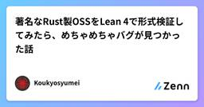
著名なRust製OSSをLean 4で形式検証してみたら、めちゃめちゃバグが見つかった話 252 Zennのトレンド
こんにちは。コロンビア大学の博士課程でシステムセキュリティ・形式検証の研究をしている Koukyosyumei です。 今回は、ざっくり言うと、Rust製の有名なOSSをLean 4で形式検証するベンチマークを作っていたら、思いがけず実際のセキュリティ脆弱性をいくつも発見してしまった、という話です。 現在私がやっているプロジェクトの一つに、RustのWebアプリケーションをLean 4で形式検証で
6日前
組織で結果を出すAI駆動開発 全開発工程を自動化するアーキテクチャ設計の実践知 20 はてなブックマーク - 人気エントリー - テクノロジー
アーキテクチャConference 2026の登壇資料はこちらです。
1日前

【自動化】Muse のサイドチャットへ Webhook を届ける MuseKnock の仕組み 66 Zennのトレンド
Meta の個人向け AI エージェント「Muse」を使い込んでいくうちに、どうしても欲しくなった仕組みがあります。Slack でメンションされた瞬間や、GitHub でリリースが出た瞬間に、そのまま Muse を動かすことです。 執筆時点（2026 年 11 月）で僕が調べた範囲では、Muse を外部イベントで即座に動かす仕組みを公開している例は見当たりませんでした。（でもいつかはリリースされそ
3日前
さくらインターネット、AWSやAzureなど他クラウドをバックアップ可能な新ストレージ「Object Storage Suite」（OS2）発表 33 Publickey
さくらインターネットは11月25日と26日の2日間、大規模イベント「SAKURA DEKIRU Conference 2026」を都内で開催。2日めの基調講演で、新たなストレージサービス「Object Storage Suite」（OS2）...
2日前

「Google Workspace MCPサーバ」と「Google Workspace CLI」が正式版としてリリース 63 Publickey
Googleは、Google WorkspaceをAIエージェントが操作するためのインターフェイスとして「Google Workspace MCP Server」と「Google Workspace CLI」が正式版になったことを発表しまし...
3日前

日本人の“相づちと間”を再現した会話AI「Haru-4B」を国内ベンチャーが無償公開。Sidon活用。電話で会話できる（生成AIクローズアップ） 30 テクノエッジ TechnoEdge
今回は、相手の声を聞きながら同時に話すことができる全二重（full-duplex）方式のSpeech-to-Speechモデル「Haru-4B」を取り上げます。
3日前
日本人の“相づちと間”を再現した会話AI「Haru-4B」を国内ベンチャーが無償公開。Sidon活用。電話で会話できる（生成AIクローズアップ） | テクノエッジ TechnoEdge 30 AI情報RSS
今回は、相手の声を聞きながら同時に話すことができる全二重（full-duplex）方式のSpeech-to-Speechモデル「Haru-4B」を取り上げます。
3日前

AIエージェント中心アーキテクチャ―人の判断を仕組みに移し、チームの役割を変えるまで / architecture-con2026 17 はてなブックマーク - 人気エントリー - テクノロジー
2026年11月26日より開催の「アーキテクチャConference 2026」の登壇資料です。 https://architecture-con.findy-tools.io/2026 ▼関連情報 AI駆動開発が変える、大規模開発の前提 ーHuman in the Loop から Human…
1日前

「良いデザイン」をAIに判断させるには 〜チームで育てるデザインハーネス〜 29 Design - Speaker Deck
2026/11/26 NIKKEI Tech Talk #51「デザインと開発を、もっと近くに〜チームで育てるUX/UI〜」で話したスライドです。https://nikkei.connpass.com/event/412181/■テーマ・AIで開発が速くなり、良し悪しの判断がデザイナーに集中した。デザイナーがいないプロジェクトでも、事業を前に進めるにはどうするか?・「良いデザイン」をAIに判断させ
3日前
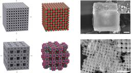
DNAで『マインクラフト』のように立体構造を構築する技術が登場、合計400個のDNAブロックでナノサイズの複雑な構造の形成に成功 15 GIGAZINE
アリゾナ州立大学などの研究チームが、DNAでできた立方体をブロックのように組み合わせ、複雑な極小立体構造を作り出す技術を開発しました。ゲーム『マインクラフト』のように立方体の組み合わせでさまざまな形状を表現できる技術で、ナノロボットや3次元電子回路の製造への応用が期待されています。研究成果は2026年11月25日付で科学誌のScience Roboticsに掲載されました。続きを読む...
2日前

GitHubに「人には見えない隠し文字」 小型AIの操作狙うものも……1億4500万件を調査 25ITmedia AI＋ 最新記事一覧
イスラエルのセキュリティ会社Radwareとテクニオン・イスラエル工科大学に所属する研究者らが発表した論文「Who Is Prompt-Injecting Coding Agents? An Empirical Study of Hidden AI-Directed Text on GitHub」は、GitHub上に潜むAI向けの隠しテキストが、誰によってどのような目的で埋め込まれているのかを分析
3日前
GitHubに「人には見えない隠し文字」 小型AIの操作狙うものも……1億4500万件を調査 | ITmedia AI＋ 最新記事一覧 25AI情報RSS
イスラエルのセキュリティ会社Radwareとテクニオン・イスラエル工科大学に所属する研究者らが発表した論文「Who Is Prompt-Injecting Coding Agents? An Empirical Study of Hidden AI-Directed Text on GitHub」は、GitHub上に潜むAI向けの隠しテキストが、誰によってどのような目的で埋め込まれているのかを分析
3日前
GitHubに「人には見えない隠し文字」 小型AIの操作狙うものも……1億4500万件を調査 25ITmedia NEWS セキュリティ 最新記事一覧
イスラエルのセキュリティ会社Radwareとテクニオン・イスラエル工科大学に所属する研究者らが発表した論文「Who Is Prompt-Injecting Coding Agents? An Empirical Study of Hidden AI-Directed Text on GitHub」は、GitHub上に潜むAI向けの隠しテキストが、誰によってどのような目的で埋め込まれているのかを分析
3日前

NVIDIAが画像生成AI「Nemotron-Labs-Image-30B-A3B」を公開、拡散モデルではなく自己回帰モデルを採用しハーネスと組み合わせてGPT-Image-2超えを達成 14 GIGAZINE
NVIDIAが画像生成AIモデル「Nemotron-Labs-Image-30B-A3B」をオープンウェイトモデルとして無償公開しました。続きを読む...
2日前

「フィッシング対策訓練」って実効性あるの？ 約1.2万人に模擬メール送り検証、結果は…… 14ITmedia NEWS セキュリティ 最新記事一覧
米パデュー大学に所属する研究者らが発表した論文「Anti-Phishing Training (Still) Does Not Work: A Large-Scale Reproduction of Phishing Training Inefficacy Grounded in the NIST Phish Scale」は、フィッシング対策研修に効果があるのかを調査した研究報告だ。
2日前

サンタクロースと無料で話せる公衆電話を南太平洋の小さな島に設置した通信技術者の記録 13 GIGAZINE
南太平洋に浮かぶオーストラリア領のノーフォーク島で携帯電話網を運営する通信技術者のニック氏らが、中古の公衆電話機をアメリカから調達し、島に設置しました。公衆電話の設置から既存の通信網への接続、AIを活用した独自のサービスの実装までの一連の経緯を、ニック氏が自身のブログで公開しています。続きを読む...
2日前
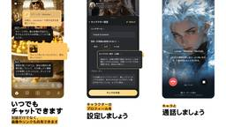
AIキャラと会話できるアプリ「Talkie」が性的コンテンツを理由にApp Storeから削除される、Google Playでは配信が続く 13 GIGAZINE
中国のAI企業であるMiniMaxが展開するAIアプリ「Talkie」がApp Storeから削除されました。Appleは削除の理由を「性的コンテンツが原因」と説明しています。続きを読む...
2日前

NumPyroで混合正規分布モデリング | ドワンゴ教育サービス開発者ブログ 13 企業テックブログRSS
企業テックブログRSS
NumPyroはモデルを設計すれば、こちらでアルゴリズム実装に頭を悩ますことなくベイズ推論をしてくれます。言い換えればブラックボックス的な側面があり、何ができて、内部で何をしているものなのか、きちんと押さえておきたい気持ちがありました。そこでこの記事では、クラスタリングに用いられるベイズ混合正規分布モデルを題材にNumPyroの記法や振る舞いを確認します。特にベイズ推論に用いられる方法の1つである
2日前
業務の複雑性と構造の複雑性は比例しない｜shotaro inoue 12 Menthas #all
Menthas #all
Dress Code株式会社でPdMをしている井上です。 人事労務・IT・総務など、企業のさまざまな業務を横断して支援するBtoB向けコンパウンドプロダクトを提供しています。 前回は意思決定の文脈の記事を書いたので今回は設計に関することについて最近よく考えていることを書いてみます。 みなさんはこんな会話に覚えはないでしょうか。 「その要件、いまの構造だと入りません」 「直すなら、ここ全部作り直しで
1日前

Character.AIのチャット履歴競売に41州とワシントンD.C.が異議 未成年者の約210万アカウント分も対象 20ITmedia AI＋ 最新記事一覧
米カリフォルニアやコネチカットなど41州とワシントンD.C.の司法長官は、破産申請した「Character.AI」の資産競売に異議を申し立てた。競売には未成年者の210万以上を含む2100万超のチャット履歴が含まれるが、買い手にデータ保護の義務がなく、プライバシー法に反するとして売却の却下を求めている。
3日前
Character.AIのチャット履歴競売に41州とワシントンD.C.が異議 未成年者の約210万アカウント分も対象 | ITmedia AI＋ 最新記事一覧 20AI情報RSS
米カリフォルニアやコネチカットなど41州とワシントンD.C.の司法長官は、破産申請した「Character.AI」の資産競売に異議を申し立てた。競売には未成年者の210万以上を含む2100万超のチャット履歴が含まれるが、買い手にデータ保護の義務がなく、プライバシー法に反するとして売却の却下を求めている。
3日前

Androidスマホの世界シェア、7〜9月期として過去最低の74％に iPhone躍進 理由は？ 7はてなブックマーク - 人気エントリー - テクノロジー
調査会社Counterpoint Researchの集計によると、2026年7〜9月に世界で販売されたスマートフォンのうち、Android搭載機が占める割合は74％だった。前年同期の79％から5ポイント低下し、7〜9月期としては同社の調査史上最低となった。スマートフォン全体の販売台数は前年同期比16％減少した。 同社は、スマートフォンの販...
19時間前
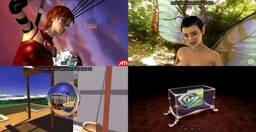
NVIDIA・ATI・3dfxの往年のGPUデモ36種類をブラウザ上で楽しめる「GPU Demo Gallery」 11 Menthas #all
NVIDIAやATI、3dfxなどのグラフィックスカードメーカーは、かつて新製品の性能や新たな描画技術をアピールするために、さまざまな3Dグラフィックスのデモを公開していました。そんな往年のGPUデモ36種類を、オリジナルのファイルを基に再構築してブラウザ上で動作するようにした「GPU Demo Gallery」が個人開発者のアーチット・コーデ氏によって公開されています。
2日前
旅行会社に残る価値は？ 生成AIに「旅の相談」が当たり前の今、業界の生存戦略 18ITmedia AI＋ 最新記事一覧
検索から予約、決済まで自律的にこなす「AIエージェント」の普及で、旅行会社の存在意義が問われている。日本旅行業協会（JATA）主催のシンポジウムに旅行・食・IT・大手旅行会社のプロ4人が登壇。「おいしい」を味わう感覚や、顧客の言葉の裏にある本音までは読み取れないAIの限界を指摘し、AIによる業務効率化で生み出した時間を「信頼関係」や現場の感動体験に振り向ける共創の生存戦略を議論した。
3日前
旅行会社に残る価値は？ 生成AIに「旅の相談」が当たり前の今、業界の生存戦略 | ITmedia AI＋ 最新記事一覧 18AI情報RSS
検索から予約、決済まで自律的にこなす「AIエージェント」の普及で、旅行会社の存在意義が問われている。日本旅行業協会（JATA）主催のシンポジウムに旅行・食・IT・大手旅行会社のプロ4人が登壇。「おいしい」を味わう感覚や、顧客の言葉の裏にある本音までは読み取れないAIの限界を指摘し、AIによる業務効率化で生み出した時間を「信頼関係」や現場の感動体験に振り向ける共創の生存戦略を議論した。
3日前
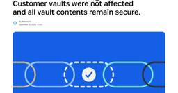
1Password、一部顧客の氏名やメールアドレスが流出 保管庫内のデータに「影響なし」 17ITmedia NEWS セキュリティ 最新記事一覧
パスワード管理ツール「1Password」を手掛けるカナダのAgileBitsは、従業員のGitHubアカウントを悪用した不正アクセスにより、一部顧客の氏名やメールアドレスなどが流出したと発表した。保管庫（Vault）内のデータや暗号化鍵に影響はなく、ユーザー側でのパスワード変更は不要だが、フィッシング詐欺への注意を呼び掛けている。
3日前

GGUF LLM Models with Hidden Malware on Hugging Face Reached 2400+ Victims | Malspark 6 はてなブックマーク - 人気エントリー - テクノロジー
GGUF LLM Models with Hidden Malware on Hugging Face Reached 2400+ Victims A scan of all 3273389 public Hugging Face model repositories found five malicious models downloaded 2428 times. The main campa
5時間前

【2026年ベストバイ】エンジニアが買ってよかったガジェット8選 | stmn tech blog 32 企業テックブログRSS
企業テックブログRSS
はじめに みなさん、こんにちは☀️プロダクト開発部のねぎちゃんです🌷 いよいよ年に一度のビッグセール、ブラックフライデーの季節がやってきましたね！ 「このタイミングで作業環境をアップデートしたい」「何か良いガジェットがないか探している」という方も多いのではないでしょうか。 そこで今回は、リモートワークと出社のハイブリッド環境で働くエンジニアやプロダクトデザイナーなど、職種やバックグラウンドの異なる
3日前

DHH氏が開発する「Omarchy 4.5」リリース。一般的なマルチウィンドウをサポート。最速7秒で導入、Appleシリコン対応、Webアプリ版MS Office用ランチャーなど新機能 117 Publickey
Ruby on Railsの作者として知られるDHH氏が主導して開発しているデスクトップ向けのLinux OS「Omarchy」の最新版「Omarchy 4.5」（別名Omarchy Quattro RS）正式版がリリースされました。 Om...
5日前

SpaceXの宇宙データセンター衛星100万基、予備通信用の電波を米FCCが初の認可 16 テクノエッジ TechnoEdge
米FCCは11月25日、SpaceXが計画する宇宙データセンター衛星「Starmind」100万基の展開を条件付きで認可しました。初号機の認可期限は2033年、全基は2040年です。高度600km超の衛星の廃棄計画は判断を保留し、実現には追加の申請を要します。
3日前
SpaceXの宇宙データセンター衛星100万基、予備通信用の電波を米FCCが初の認可 | テクノエッジ TechnoEdge 16 AI情報RSS
米FCCは11月25日、SpaceXが計画する宇宙データセンター衛星「Starmind」100万基の展開を条件付きで認可しました。初号機の認可期限は2033年、全基は2040年です。高度600km超の衛星の廃棄計画は判断を保留し、実現には追加の申請を要します。
3日前

コードを書くコストが下がった今、ソフトウェアエンジニアリングの価値はどこにあるのか 116
 生成AIタグが付けられた新着記事 - Qiita
生成AIタグが付けられた新着記事 - Qiita
はじめにAIがコードを書くようになった今、ソフトウェアエンジニアの仕事は不要になるのでしょうか。私は日常的にAIを使って開発しています。数時間かかっていた実装を短時間で終えられるなら、手作業にこだわる理由はありません。その分、問題の理解や設計、品質の改善に時間を使えるのは歓迎すべき変化です。ただ、コードを書く速度と、ソフトウェア開発全体の生産性を同じものとして扱うことには疑問があります。2026年
7日前
コードを書くコストが下がった今、ソフトウェアエンジニアリングの価値はどこにあるのか 116 AIエージェントタグが付けられた新着記事 - Qiita
はじめにAIがコードを書くようになった今、ソフトウェアエンジニアの仕事は不要になるのでしょうか。私は日常的にAIを使って開発しています。数時間かかっていた実装を短時間で終えられるなら、手作業にこだわる理由はありません。その分、問題の理解や設計、品質の改善に時間を使えるのは歓迎すべき変化です。ただ、コードを書く速度と、ソフトウェア開発全体の生産性を同じものとして扱うことには疑問があります。2026年
7日前

アウトプットの「質」ってじゃあなんなんだよ 31 Zennのトレンド
登壇にしてもブログにしても「やれば偉い」ってオチにすればみんなハッピーなんだけど、それはそれとして自分のために時間を使ってくれている受け手には失望して欲しくないし、何かを得てもらいたくないですか？面倒なので以降は、共感できる方だけ読み進めてください。 他にもあるかもしれませんが、1番近いなと思うものを選んでください 公式ドキュメントからの逸脱はあるか？ - 差分や制約があると面白い - ドキュメン
3日前

中国への過度なハイテク輸出規制は「国内開発体制の加速につながる」と半導体露光装置メーカー・ASMLのフーケCEOが警告 9 GIGAZINE
世界最大の半導体露光装置メーカーとして知られるオランダ・ASMLのクリストフ・フーケCEOが、半導体などの最先端技術を守るための輸出規制はある程度必要だと認めた一方で、過度な規制は中国の国内開発体制の強化につながるだけだと警告しています。続きを読む...
2日前
【Win11新機能】もうインストールメディアは不要？ Windows 11「クラウドリビルド」のメリットと落とし穴 9はてなブックマーク - 人気エントリー - テクノロジー
【Win11新機能】もうインストールメディアは不要？ Windows 11「クラウドリビルド」のメリットと落とし穴：Tech TIPS Windows 11の新しい回復機能「クラウドリビルド」を使えば、USBメモリを用意しなくてもWindows回復環境（WinRE）からOSイメージとドライバを取得して再インストールできる。起動トラブル時の復旧はも...
2日前

AnthropicのアモデイCEO、「人間の自由意志をAIに明け渡す」考えを否定 AI企業間で議論 15ITmedia AI＋ 最新記事一覧
Anthropicのダリオ・アモデイCEOは、超知能AIに人間の意思決定権を委ねるべきだと考えているとしたAxiosの報道をXで否定した。社会の統治と個別タスクの自動化を混同していると反論し、AIは民主的プロセスで管理されるべきだと強調した。超知能時代の主導権を巡っては、OpenAIやMeta幹部も発言しており議論が広がっている。
3日前
AnthropicのアモデイCEO、「人間の自由意志をAIに明け渡す」考えを否定 AI企業間で議論 | ITmedia AI＋ 最新記事一覧 15AI情報RSS
Anthropicのダリオ・アモデイCEOは、超知能AIに人間の意思決定権を委ねるべきだと考えているとしたAxiosの報道をXで否定した。社会の統治と個別タスクの自動化を混同していると反論し、AIは民主的プロセスで管理されるべきだと強調した。超知能時代の主導権を巡っては、OpenAIやMeta幹部も発言しており議論が広がっている。
3日前
蓄積をどう解釈すれば基盤整備に踏み出せるか — 10 年目のクラウドサインの場合 14 はてなブックマーク - 人気エントリー - テクノロジー
アーキテクチャカンファレンス2026 における、クラウドサイン Product Engineering部 共通基盤チーム テックリード 榎⼾ 亮太 (@enkdsn) による登壇資料です。 【アーキテクチャカンファレンス202…
3日前

ブラックフライデーでGoogle AIサブスク半額、Pro月額より年2万円お得。YouTubeプレミアムLiteやGoogle Health特典も 27 テクノエッジ TechnoEdge
Googleは、ストレージ容量とAIのサブスクGoogle AI Plus / Pro年額プランが半額になるブラックフライデーセールを実施中です。
3日前
ブラックフライデーでGoogle AIサブスク半額、Pro月額より年2万円お得。YouTubeプレミアムLiteやGoogle Health特典も | テクノエッジ TechnoEdge 27 AI情報RSS
Googleは、ストレージ容量とAIのサブスクGoogle AI Plus / Pro年額プランが半額になるブラックフライデーセールを実施中です。
3日前
Farewell · Issue #601 · p-e-w/heretic 5 はてなブックマーク - 人気エントリー - テクノロジー
Dear friends of Heretic, as foreshadowed a while ago, my journey has now come to an end. Unfortunately, this includes my work on Heretic, which has meant so much to me. I sincerely regret the inconven
6時間前


jQuery 4.1正式版がリリース、内部実装をquerySelectorAllに統一でより高速に。jQuery 3.x系最後となるjQuery 3.8も同時リリース 63 Publickey
jQuery開発チームは、JavaScriptライブラリ「jQuery」の最新版となる「jQuery 4.1」正式版のリリースを発表しました。 また同時にjQuery 3.x系の最後のリリースとなる「jQuery 3.8」も同時にリリースし...
4日前

AWS、DynamoDB互換データベースをローカルマシンで構築可能にするオープンソース「ExtendDB」がバージョン1.0に到達 56 Publickey
Amazon Web Services（AWS）は、同社がクラウドサービスとして提供しているNoSQLデータベース「Amazon DynamoDB」の互換データベースを、Windows、Linux、macOSなどのOSに対応したユーザーのロ...
4日前

さくらのクラウド、新ネットワーク基盤、新データベースサービスなど投入。東京リージョン第三ゾーン新設も発表 11 Publickey
さくらインターネットは11月25日と26日の2日間、大規模イベント「SAKURA DEKIRU Conference 2026」を都内で開催し、さくらのクラウドに関して東京リージョンの第三ゾーン、新ネットワーク基盤や新データベースサービスの...
2日前

楽天証券の情報漏えい、個人情報は約441万件と判明 資産残高168万件、口座未開設の119万件も 21 テクノエッジ TechnoEdge
楽天証券の個人情報漏洩は約441万件で口座情報・資産情報を含み未開設情報も混在。パスワード等は漏れておらず、原因究明と再発防止を進行中。
4日前
楽天証券の情報漏えい、個人情報は約441万件と判明 資産残高168万件、口座未開設の119万件も | テクノエッジ TechnoEdge 21 AI情報RSS
楽天証券の個人情報漏洩は約441万件で口座情報・資産情報を含み未開設情報も混在。パスワード等は漏れておらず、原因究明と再発防止を進行中。
4日前
「AIは信用できない」と考えている人でもAIのアドバイスに影響されてしまうという研究結果 6 GIGAZINE
AIが生成する回答には誤った情報が含まれることもあるため、「AIよりも人間のアドバイスを信用する」という人も多いはず。ところが、AIを信用していない人であっても実際に意思決定を行う際にはAIのアドバイスに影響されてしまうことがイギリスのロンドン大学シティ・セントジョージズの研究チームによって明らかになりました。続きを読む...
1日前

Claude Code を5〜8個並べても迷わないように、自分用のダッシュボードをバイブコーディングで作った 48 Zennのトレンド
Claude Code は、VSCode の拡張機能で使うのが好きだ。 Markdown が見やすく、コードも Git の変更差分もその場で見られる。 パネルを横に並べられるので、セッション同士が隠れない。VSCode から離れずに済む。 ただ、セッションを5つほど並べると困ることが出てくる。 一番困ったのは、パネルの見出しが短くて、どれが何の作業をしているのか一目で分からないことだった。 一時期
5日前
Rails: 37signalsのコード品質を支える独自のエンジニアリング戦略（翻訳） | TechRacho 47 企業テックブログRSS
企業テックブログRSS
概要 原著者の許諾を得て翻訳・公開いたします。 英語記事: 37signals Isn't Smarter Than You, But They Are Different 原文公開日: 2026/01/27 原著者: Nate Berkopec 日本語タイトルは内容に即したものにしました。 Rails: 37signalsのコード品質を支える独自のエンジニアリング戦略（翻訳） 要約 37sign
4日前

なぜ 11 月に日本のサイバー事故は「爆発」したのか — 605件を数えたら「日本が狙われている」だけではなかった
43 Securityタグが付けられた新着記事 - Qiita
この図は IT連携マップで操作できます → https://renkeimap.jp/security/incidents上の図は、セキュリティ事故の一覧の頭にある図「事故の時期と規模」を 1 枚の画像にしたものです。サイトの図では、円を押すと、その事故のカード（漏えいした項目・使う人のやること・出典）が図の下に出ます。KARTE のように 1 件の事故から多くの会社が公表した円では、カードの「こ
5日前

[ITmedia News] 聴覚障害の社員にスマートグラス支給 会話をリアルタイムに文字表示 ソフトバンク、連携アプリも独自開発 5ITmedia 総合記事一覧
外部のサーバを介さずにスマホ内で音声認識処理と文字起こしを完結させ、文字起こしした内容をスマートグラスに表示する。
2日前

DevHRがTypeScriptを書いて、TSKaigi Sendaiで登壇までした話 | Nealle Developer's Blog 5 企業テックブログRSS
企業テックブログRSS
はじめに こんにちは、ニーリーでDevHRをしている榎本です。 HRでも特にDevloper's HRということで、採用バックオフィス向けの開発も実はゴリゴリやっていますw その甲斐もあって(?)先日開催されたTSKaigi Sendai 2026に、20分セッションで登壇してきましたので、遅ればせながらレポートを書きました！ この記事では、自分の登壇の振り返りに加えて、特に心に残ったセッションや
2日前

「ARTEX」を使った攻撃の観測と被害組織の公表についてまとめてみた - piyolog 3 Menthas #all
2026年11月5日、複数のセキュリティ企業と関連機関がAIペネトレーションテストツール「ARTEX」*1の悪用の観測結果を公表しました。ARTEXを使った侵入を受けた組織の公表も11月2日以降に出ています。ここでは関連する情報をまとめます。piyolog.hatenadiary.jp 目次 目次 【Amazon報告】おとりのAI推論APIで捕捉した作戦の記録 作戦1 AIモデルのAPIキーの大規
1時間前

無料で使えるブラウザベースのファイルマネージャー「FileBrowser Quantum」、超高速検索・複数ユーザー管理・アクセス制御・期限やパスワード付き共有・ファイルプレビュー・編集などができてローカルでセルフホスト可能 3 GIGAZINE
保存したファイルが増えていくと目的のファイルを探し出すだけでなく、内容を確認して別のユーザーに共有する作業にも手間がかかります。そこで、インデックスを使った高速検索や画像・動画・文書のプレビュー、パスワードや有効期限付きのファイル共有などに対応した無料のファイルマネージャーが「FileBrowser Quantum」です。ブラウザからどのような操作ができるのか確かめるため、ローカル環境に構築して実
9時間前
[ITmedia Mobile] 駅の「自動改札機」にたくさんリーダーが付くのはなぜなのか ヒントは「分かりやすさ」？ 3ITmedia 総合記事一覧
最近、鉄道駅の自動改札機にいろいろなリーダーが付いてゴチャゴチャしているように思えます。しかし視点を変えると、このゴチャゴチャさはむしろ「分かりやすさ」のためなのかもしれません。
13時間前
リモートワークをすると1日あたり「21分」の運動時間を失うという研究結果 3 GIGAZINE
リモートワークをすると朝晩の通勤やオフィスビル内の移動がなくなるため、オフィスに出勤する時より仕事がはかどるという人もいるはず。その一方で、リモートワークによって日々の運動時間が大きく減ってしまう可能性があるとの研究結果が発表されました。続きを読む...
15時間前
[ITmedia PC USER] 125万円のAIミニPCが登場！ 同価格帯のRTX 5090カードには約5万円の1300W電源がオマケで付属 3ITmedia 総合記事一覧
PCパーツショップに並ぶ製品の価格帯が、どんどん上昇している昨今。今週は192GBメモリを搭載したAIミニPCが125万円前後で新製品コーナーに並び、同じ価格帯のGeForce RTX 5090カードには1300W電源のオマケが付くキャンペーンも見られた。
21時間前
[ITmedia Mobile] モトローラが“型落ちの最上位”「signature」を投入する狙い 切り札の「コンシェルジュ」で勝負 3ITmedia 総合記事一覧
モトローラがバータイプの最上位スマホ「motorola signature」を12月4日に日本で発売する。差別化の鍵は24時間対応の専用コンシェルジュサービス「signature club」の日本向け展開だ。海外では後継機も発表済みだが、価格高騰を抑えて日本市場での実利を取りにいく戦略がみてとれる。
21時間前

Claude Code の /ship を図解する 30 Zennのトレンド
PeopleX でプロダクト開発をしている Aki です🚀 Claude Code に /ship というスキルがベータ版としてリリースされました。コミットと push、PR の作成、レビューと修正、マージかクローズまでの見張りを、1つのセッションで受け持つスキルです。 私は普段、自作のスキルと Claude Desktop の Auto-fix を組み合わせて、PR を出してからボットの指摘に対
4日前
OpenAI and Cisco introduce Shirudo 30 OpenAI News
OpenAI News
OpenAI and Cisco introduce Shirudo, an open-source runtime for Linux. It helps teams protect running systems while they roll out patches.
5日前

脆弱性の「CVSS 9.8」って結局なに？CVSSの読み方をちゃんと理解する 47 Securityタグが付けられた新着記事 - Qiita
はじめにDependabot のアラートや脆弱性情報を見ていると、こんな表記をよく目にします。CVSS 9.8 (Critical)CVSS:3.1/AV:N/AC:L/PR:N/UI:N/S:U/C:H/I:H/A:H「数字が大きいほどヤバいんだろうな」くらいの理解で済ませていたのですが、依存パッケージの脆弱性を監視するアプリ『Vectana』を作るにあたって、改めてちゃんと調べてみました。この
7日前
Introducing Claude Ship 44
 Claude Product announcements
Claude Product announcements
Open a pull request and get back to building. Claude can now review pull requests, fix them, and approve the ones that a team's policy allows.
6日前


なぜ、Rustは未来永劫普及しないと言えるのか？ | Zennの「生成 AI」のフィード 3 AI情報RSS
筆者は2026年3月5日に、以下の記事を公開しました。 この記事では、従来は人間にとって負担であったRustの厳格な型システムや所有権システムが、AIにとっては実装の正しさを検証するための有効な仕組みとして機能することに着目しました。AIによってRustの実装難易度という弱点が緩和され、安全性という長所が残ることで、基幹領域での採用が連鎖し、Rustが覇権言語になる可能性を論じたものです。当時の筆
1日前
なぜ、Rustは未来永劫普及しないと言えるのか？ 3
Zennの「生成 AI」のフィード
筆者は2026年3月5日に、以下の記事を公開しました。 この記事では、従来は人間にとって負担であったRustの厳格な型システムや所有権システムが、AIにとっては実装の正しさを検証するための有効な仕組みとして機能することに着目しました。AIによってRustの実装難易度という弱点が緩和され、安全性という長所が残ることで、基幹領域での採用が連鎖し、Rustが覇権言語になる可能性を論じたものです。当時の筆
1日前

YouTubeで広告が出たら自動的にページを再読み込みして広告を消すChrome拡張「YouTube Ad Punisher」 3 GIGAZINE
「YouTube Ad Punisher」は、YouTubeで広告が再生された瞬間にページを自動でリロードし、広告を回避するブラウザ拡張機能です。一般的な広告ブロッカーとは異なり、広告の通信自体を遮断するのではなく、ページの再読み込みによってYouTubeに広告配信の判定をやり直させる仕組みを採用しています。続きを読む...
1日前
有酸素運動と筋力トレーニングの順番が血糖値調節に影響するとの研究結果 3 GIGAZINE
運動が血糖値のコントロールに役立つことは広く知られており、ジョギングやサイクリングなどの有酸素運動と筋力トレーニングはそれぞれ異なる効果をもたらします。中国とスウェーデンの研究者らは、これらの運動をどのような順番で行うことでより高い効果を得られるかについて研究しました。続きを読む...
1日前
NVIDIAがシンガポールなど東南アジア4カ国へのサーバー出荷停止をDELLやSupermicroなどに指示 3 GIGAZINE
NVIDIAがDELLやSupermicroといったメーカーに対し、シンガポール、マレーシア、インドネシア、タイの東南アジア4カ国にNVIDIA製半導体を搭載したサーバーを出荷しないよう指示したことがわかりました。東南アジア諸国が、NVIDIA製半導体を何とかして入手したい中国にとっての中継地になっており、アメリカの商務省が対策に乗り出したためです。続きを読む...
1日前
Why Your Coding Agent Still Writes 2019 Web Code by Rick Viscomi 3 Menthas #all
Menthas #all
Frontier coding agents routinely ship hundreds of lines of legacy JavaScript for UI patterns the web platform now handles natively. Drawing on Modern Web Guidance, an agent skill with 200+ web develop
1日前
「ARTEX」を使った攻撃の観測と被害組織の公表についてまとめてみた 3 piyolog
2026年11月5日、複数のセキュリティ企業と関連機関がAIペネトレーションテストツール「ARTEX」*1の悪用の観測結果を公表しました。ARTEXを使った侵入を受けた組織の公表も11月2日以降に出ています。ここでは関連する情報をまとめます。piyolog.hatenadiary.jp目次目次【Amazon報告】おとりのAI推論APIで捕捉した作戦の記録作戦1 AIモデルのAPIキーの大規模窃取作
2日前
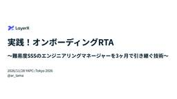
実践！オンボーディングRTA 〜難易度SSSのエンジニアリングマネージャーを3ヶ月で引き継ぐ技術〜 / Onboarding Speedrun — Your Mission: Complete an SSS-Rank Engineering Manager Handoff in Three Months 3 Technology - Speaker Deck
YAPC::Tokyo 2026 にて発表した内容です。https://fortee.jp/yapc-tokyo-2026/proposal/e63742a6-1789-4990-9ab3-56e7518e0804リンク■ AI Coding Meetup #4 OSSメンテナと話す2026年の変化とこれからhttps://layerx.connpass.com/event/413119/
2日前

サイバー攻撃への悪用をFBIが警告した「ARTEX」の英語フォーク版、Apple開発のリアルタイム動画生成AI「FastFrames」など生成AI技術5つを解説（生成AIウィークリー） 3 テクノエッジ TechnoEdge
今回の「生成AIウィークリー」（第169回）は、元OpenAI CTOが率いるThinking Machines LabによるノートPCで動くAIモデル「Inkling 2 Mini」や、Apple開発のリアルタイム動画生成AI「FastFrames」を取り上げます。
2日前
サイバー攻撃への悪用をFBIが警告した「ARTEX」の英語フォーク版、Apple開発のリアルタイム動画生成AI「FastFrames」など生成AI技術5つを解説（生成AIウィークリー） | テクノエッジ TechnoEdge 3 AI情報RSS
今回の「生成AIウィークリー」（第169回）は、元OpenAI CTOが率いるThinking Machines LabによるノートPCで動くAIモデル「Inkling 2 Mini」や、Apple開発のリアルタイム動画生成AI「FastFrames」を取り上げます。
2日前

生成AI登場で人員増えた部門、減った部門は？ デロイト調査 | ITmedia AI＋ 最新記事一覧 3AI情報RSS
デロイトが実施した調査で、企業における2026年のAI導入、活用状況が明らかになった。
2日前

ヤマト運輸の問い合わせチャットが停止中、委託先チャットプラスに不正アクセス 氏名・住所・電話番号が漏えいの可能性 9 テクノエッジ TechnoEdge
ヤマトホールディングスが、問い合わせ用チャットの委託先チャットプラスへの不正アクセスを公表しました。外国語窓口の利用者の氏名・住所・電話番号が漏えいした可能性があり、チャット4種の受付を停止しています。
3日前
ヤマト運輸の問い合わせチャットが停止中、委託先チャットプラスに不正アクセス 氏名・住所・電話番号が漏えいの可能性 | テクノエッジ TechnoEdge 9 AI情報RSS
ヤマトホールディングスが、問い合わせ用チャットの委託先チャットプラスへの不正アクセスを公表しました。外国語窓口の利用者の氏名・住所・電話番号が漏えいした可能性があり、チャット4種の受付を停止しています。
3日前

呼びかけると故人の写真を映すAI仏壇「コハコ」発売、49万5000円 10年後の家族に動画を届ける機能も 20 テクノエッジ TechnoEdge
AI仏壇『コハコ』発売49万5000円。写真動画をAIが解析・表示、呼びかけ機能・タイムメッセージ搭載、遺品収納・位牌4本対応。
4日前
呼びかけると故人の写真を映すAI仏壇「コハコ」発売、49万5000円 10年後の家族に動画を届ける機能も | テクノエッジ TechnoEdge 20 AI情報RSS
AI仏壇『コハコ』発売49万5000円。写真動画をAIが解析・表示、呼びかけ機能・タイムメッセージ搭載、遺品収納・位牌4本対応。
4日前

PostgreSQL 19正式リリース。ノンブロッキングなREPACKやI/Oワーカーのオートスケールなど新機能 30 Publickey
オープンソースのリレーショナルデータベース「PostgreSQL」の最新版となる「PostgreSQL 19」正式版がリリースされました（日本語のプレスリリース）。 PostgreSQLは毎年9月もしくは10月にメジャーバージョンアップが行...
5日前

Turn artifacts into Mac and Windows apps 19 Claude Product announcements
Open the artifacts you use every day like any other app, and let them do more on your computer
5日前

米ニューヨーク州、AIチャットボット搭載おもちゃを5年間禁止 4 テクノエッジ TechnoEdge
ニューヨーク州知事が、AIチャットボット搭載おもちゃの製造・流通・販売を州内で5年間禁じる法律に署名しました。2027年2月22日に施行し、違反には1日最大1万5000ドルの制裁金を科します。
2日前
米ニューヨーク州、AIチャットボット搭載おもちゃを5年間禁止 | テクノエッジ TechnoEdge 4 AI情報RSS
ニューヨーク州知事が、AIチャットボット搭載おもちゃの製造・流通・販売を州内で5年間禁じる法律に署名しました。2027年2月22日に施行し、違反には1日最大1万5000ドルの制裁金を科します。
2日前

OpenAIが蒸留対策を公開、AIの「思考過程」を抜き取る攻撃の成功率を54%から0.2%に
18 テクノエッジ TechnoEdge
OpenAIは敵対的蒸留対策で推論過程の抽出成功率を54%→0.2%に低下。リクエスト単位の対策と組織的検知の二層防御を導入し、推論を会話履歴に結び付け破棄可能に。
5日前
OpenAIが蒸留対策を公開、AIの「思考過程」を抜き取る攻撃の成功率を54%から0.2%に | テクノエッジ TechnoEdge 18 AI情報RSS
OpenAIは敵対的蒸留対策で推論過程の抽出成功率を54%→0.2%に低下。リクエスト単位の対策と組織的検知の二層防御を導入し、推論を会話履歴に結び付け破棄可能に。
5日前

家計データをなぜ「Muse」「ChatGPT」に渡すのか？ マネーフォワードに聞いた狙いと安全策 3ITmedia AI＋ 最新記事一覧
頼んでもいないのに、AIが朝一番にカードの引き落としと預金を照らし合わせて知らせてくる。家計簿アプリ「マネーフォワード ME」のデータがMetaのMuseに届くようになったからだ。だが家計の記録は、マネーフォワードにとって最大の資産のはず。なぜ外のAIに差し出したのか。安全は誰が守るのか。
2日前
家計データをなぜ「Muse」「ChatGPT」に渡すのか？ マネーフォワードに聞いた狙いと安全策 | ITmedia AI＋ 最新記事一覧 3AI情報RSS
頼んでもいないのに、AIが朝一番にカードの引き落としと預金を照らし合わせて知らせてくる。家計簿アプリ「マネーフォワード ME」のデータがMetaのMuseに届くようになったからだ。だが家計の記録は、マネーフォワードにとって最大の資産のはず。なぜ外のAIに差し出したのか。安全は誰が守るのか。
2日前

1Passwordに不正侵入 GitHub経由で顧客の氏名やメアド流出、警戒すべき二次被害と対策は 3セキュリティ － TechTargetジャパン 最新記事一覧
1Passwordのバックエンドが侵害され、顧客のメールアドレスや一部の招待トークンが流出した。流出したデータの中には、特定のプロビジョニング機能を利用する企業にとって見過ごせない情報が含まれている。情シスが今すぐ警戒すべき二次被害と対策は。
3日前

1Passwordに不正アクセス、一部顧客の氏名とメールアドレスが流出 保存したパスワードと暗号鍵は影響なし 3 テクノエッジ TechnoEdge
1Passwordは、攻撃者が従業員のGitHubアカウント経由で社内システムへ侵入し、一部顧客の氏名とメールアドレスを持ち出したと公表しました。利用者が保存したパスワードなどのデータと暗号鍵は影響を受けておらず、利用者側の設定変更は不要です。
3日前
1Passwordに不正アクセス、一部顧客の氏名とメールアドレスが流出 保存したパスワードと暗号鍵は影響なし | テクノエッジ TechnoEdge 3 AI情報RSS
1Passwordは、攻撃者が従業員のGitHubアカウント経由で社内システムへ侵入し、一部顧客の氏名とメールアドレスを持ち出したと公表しました。利用者が保存したパスワードなどのデータと暗号鍵は影響を受けておらず、利用者側の設定変更は不要です。
3日前

AIが実装し、人間が品質を判断する。iOS機能開発チームで取り組んだAIワークフローと品質保証の再設計 | kubell Creator's Note 3 企業テックブログRSS
企業テックブログRSS
はじめに こんにちは。株式会社kubellのiOSアプリ開発グループ機能開発チームで、ChatworkのiOSアプリを開発している水口です。 私たちのチームではAIコーディング支援を、個人の生産性向上に使う段階から、開発タスクを自律的に進める段階へと広げてきました。現在は企画された開発タスクをAIが実装・検証し、Pull Request（PR）の作成まで進めています。 その過程で見えてきたのは、A
3日前

結局「オントロジー」って何なのさ 〜概念と良さを4つのレイヤーで整理する〜 5 Zennのトレンド
こんにちは。11月より、Algomaticでエンジニアをしているひさふるです。 最近、AIに関連するワードで"オントロジー"という用語をよく耳にします。 「オントロジーを使えば企業のデータを文脈としてAIに理解させられる」のように説明されることも多く、AI時代の企業のデータの持ち方として今非常に注目されています。AIの会社を名乗る我々Algomaticでも、オントロジーの活用は避けては通れず、今様
3日前
Ruby のインストールとバージョン管理を rbenv から rv に切り替えた（翻訳） | TechRacho 5 企業テックブログRSS
概要 元サイトの許諾を得て翻訳・公開いたします。 英語記事: Binary Solo | Ruby installation and management with rv 原文公開日: 2026年08月11日 原著者: Ayush Newatia Rubyのインストールとバージョン管理をrbenvからrvに切り替えた（翻訳） 複数のRubyバージョンを管理する作業は何かと面倒です。プロジェクトごと
3日前

Perplexity and Intelligence 18 OpenAI News
How perplexity measures progress in AI models, and why it could help developers establish a shared approach to evaluating emerging capabilities.
7日前
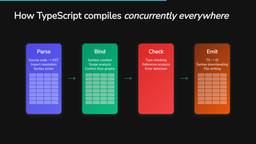
CI ランナーを小さくする TypeScript 7 の型チェック設定 | 株式会社ヘンリー エンジニアブログ 11 企業テックブログRSS
企業テックブログRSS
TypeScript 7のネイティブ型チェックは既定で4並列、速い代わりにメモリを多く使います。ヘンリーではCIランナーを1段小さくするため並列数を減らし、Unmasked型の見直しやJS出力の削減もあわせて、型チェックのpeak RSSを約8.9GiBから約5.8GiBまで、約3GiB削減した話を紹介します。
5日前
CI ランナーを小さくする TypeScript 7 の型チェック設定 | 株式会社ヘンリー エンジニアブログ 11 AI情報RSS
はじめにこんにちは！株式会社ヘンリーでSWEをしている ken7253（id:ken7253）です！私は6月からヘンリーに入社し医療ドメインという非常に複雑なドメインに圧倒されていますが、もともと培ってきたフロントエンドエンジニアとしての知見をプロダクトに活かすために様々な改善活動を進めています。今回はその改善活動の一環としてフロントエンドにおける型チェックの最適化について紹介させていただきます。
5日前
CI ランナーを小さくする TypeScript 7 の型チェック設定 11 株式会社ヘンリー エンジニアブログ
はじめにこんにちは！株式会社ヘンリーでSWEをしている ken7253（id:ken7253）です！私は6月からヘンリーに入社し医療ドメインという非常に複雑なドメインに圧倒されていますが、もともと培ってきたフロントエンドエンジニアとしての知見をプロダクトに活かすために様々な改善活動を進めています。今回はその改善活動の一環としてフロントエンドにおける型チェックの最適化について紹介させていただきます。
5日前

クマ検知AIの弱点は「野生のクマの映像が集まらない」 飼育施設で距離を変えて撮影、ドローンからも 10 テクノエッジ TechnoEdge
秋田のくまくま園でクマ検知AIのデータ収集実証を実施。距離・角度等条件別に検知範囲を分析し、精度は未公表。今後実環境での検証へ。モリフクロウ連携の対策も検討。
4日前
クマ検知AIの弱点は「野生のクマの映像が集まらない」 飼育施設で距離を変えて撮影、ドローンからも | テクノエッジ TechnoEdge 10 AI情報RSS
秋田のくまくま園でクマ検知AIのデータ収集実証を実施。距離・角度等条件別に検知範囲を分析し、精度は未公表。今後実環境での検証へ。モリフクロウ連携の対策も検討。
4日前
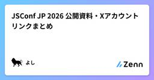
JSConf JP 2026 公開資料・Xアカウントリンクまとめ 15 Zennのトレンド
2026/11/22(日)で開催された JSConf JP 2026に関する、現時点での公開資料と X アカウントリンクをまとめました。 よろしければご活用ください。 この記事は、個人ブログへ投稿した記事の転載です。 登壇社名および登壇者名は敬称略させていただいています。 x アカウントについては、以下のように確認できたものを記載しております。 JSConf JP 公式サイトに記載のプロフィールと
6日前

Introducing Search for Agents 4 Cloudflare Blog
Cloudflare Blog
Flip one toggle to make your site searchable by AI agents — complete with automatic content indexing, a discoverable search API, and native HTTP QUERY support.
3日前

Google、Gmailやドライブなど8サービス向けのWorkspace MCPサーバーと公式CLI「gwscli」を一般提供 4 gihyo.jp
Googleは2026年11月24日、AIエージェントからGmailやドライブなどを操作できる「Google Workspace MCPサーバー」と、公式コマンドラインツール「Google Workspace CLI」の一般提供を発表した。公式CLI（gwscli）のWindows版、macOS版、Linux版は、すでにインストールページからダウンロードできる。
3日前

GmailやDriveを操作するAIは「専用の入り口」経由が必須に、Googleがメール送信や共有変更に人の確認を挟む仕組みを一般提供 4 テクノエッジ TechnoEdge
GoogleはAIエージェントのGmail等接続を専用口経由必須化、MCP/CLIで権限・DLP適用。送信・共有変更時に人の確認必須、2027年2月導入、4月課金開始。
4日前
GmailやDriveを操作するAIは「専用の入り口」経由が必須に、Googleがメール送信や共有変更に人の確認を挟む仕組みを一般提供 | テクノエッジ TechnoEdge 4 AI情報RSS
GoogleはAIエージェントのGmail等接続を専用口経由必須化、MCP/CLIで権限・DLP適用。送信・共有変更時に人の確認必須、2027年2月導入、4月課金開始。
4日前
なんとなくgrill-meしている人に伝えたい、作者本人から学んだSkillsの使い方 4 Zennのトレンド
株式会社メディアフォースでエンジニアをしている池田です。自社プロダクトの開発を担当しています。 弊社の開発チームは、設計や実装にClaude Codeを利用しています。 周りのエンジニアに勧められたことをきっかけに、最近はMatt PocockのSkillsを利用しています。 このSkillsは2026年春頃から話題になっていたgrill-me（grilling）を含んだスキル集です。 仕様の曖昧
4日前

Zoomのメモリに残るMicrosoft 365のトークン 盗まれるとMFAなしで再利用される恐れ 4ITmedia エンタープライズ「セキュリティ」 最新記事一覧
予定表を同期するZoomのメモリに、Microsoft 365にアクセスするためのトークンが残っていた。多要素認証を済ませた後に発行されたこのトークンが、同じ端末で動く別のプログラムに読み取られたらどうなるのか。
4日前
【個人開発】AIでバトルロイヤルゲームを作ってみた 3 AIタグが付けられた新着記事 - Qiita
はじめに「荒野行動みたいなバトロワを、ブラウザで、three.js なしで作って」そう AI に頼んだら、2日後にはこうなっていました。ブラウザで動く30人バトルロイヤル（オンライン対戦 / ボット戦）Rust → WebAssembly のゲームコア、生の WebGPU（three.js なし）の自作レンダラCloudflare Workers + Durable Objects のサーバー権威
3日前

ATOKがLLMを取り入れた新変換エンジンに、2027年2月1日提供 PC内の文書から辞書を自動作成する機能も 3 テクノエッジ TechnoEdge
ジャストシステムは、LLMを取り入れた新変換エンジンを搭載するATOKを2027年2月1日に提供します。PC内の文書から辞書を自動作成する機能も加えます。ローカルLLMで文書作成を支援する「一太郎2027」も2月5日に発売します。
3日前
ATOKがLLMを取り入れた新変換エンジンに、2027年2月1日提供 PC内の文書から辞書を自動作成する機能も | テクノエッジ TechnoEdge 3 AI情報RSS
ジャストシステムは、LLMを取り入れた新変換エンジンを搭載するATOKを2027年2月1日に提供します。PC内の文書から辞書を自動作成する機能も加えます。ローカルLLMで文書作成を支援する「一太郎2027」も2月5日に発売します。
3日前
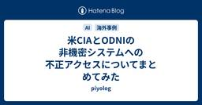
米CIAとODNIの非機密システムへの不正アクセスについてまとめてみた 3 piyolog
2026年11月24日、米中央情報局(CIA)と国家情報長官室(ODNI)が非機密情報の一部が露出したサイバーセキュリティ侵害を最近発見したと、複数の報道が関係者の話として伝えました。ここでは関連する情報をまとめます。公開情報の分析システムに侵入最近発見されたとされる侵入の対象はCIAとODNIが使うOSINT(公開情報)分析システム(出典: 3, 4)。公開された非機密の資料から情報分析上の示唆
4日前
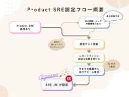
Product SRE 制度という選択 - 中央集権SREからの脱却 | freee Developers Hub 3
 企業テックブログRSS
企業テックブログRSS
freeeでProduct SRE制度の設計や実装を担当しているSREのmin(@minngk_min_)です。 中央集権SREだったところから、プロダクトチームが開発や運用の目的に合わせてインフラ変更できるようになった、Product SRE制度について紹介しようと思います！ SRE がボトルネックになる？ これまでのSREの役割と、Product SREがいる世界 freee の Produc
4日前
解約して1年以上の筆者にも届いた漏えい通知 「資産を持っている」「通院している」がひも付く日 6ITmedia エンタープライズ「セキュリティ」 最新記事一覧
1年以上前に解約した楽天証券から、情報漏えいの可能性を知らせるメールが筆者に届きました。相次ぐ漏えいで流出したのは氏名や住所だけではありません。筆者が警戒する、生成AIを使った次の脅威とは何でしょうか。
5日前

手書きをやめた途端、ブログが全部AI臭くなったあなたへ！ マシにする方法教えます 9 AIタグが付けられた新着記事 - Qiita
友達のブログが AI slop だらけになって、がっかりしていませんか？この1年でブログをAIに書かせる人が増えましたよね。学んだことを面白く書いていた友達まで、情報量ばかりのビジーな記事を出すようになり、読まなくなった人も多いのではないでしょうか。とはいえ、アンチAIだった私ですら、最近はブログのほとんどを Claude Code に書いてもらっています。先日公開したこちらの記事もそうです。人に
6日前
手書きをやめた途端、ブログが全部AI臭くなったあなたへ！ マシにする方法教えます 9 生成AIタグが付けられた新着記事 - Qiita
友達のブログが AI slop だらけになって、がっかりしていませんか？この1年でブログをAIに書かせる人が増えましたよね。学んだことを面白く書いていた友達まで、情報量ばかりのビジーな記事を出すようになり、読まなくなった人も多いのではないでしょうか。とはいえ、アンチAIだった私ですら、最近はブログのほとんどを Claude Code に書いてもらっています。先日公開したこちらの記事もそうです。人に
6日前
手書きをやめた途端、ブログが全部AI臭くなったあなたへ！ マシにする方法教えます 9 ClaudeCodeタグが付けられた新着記事 - Qiita
友達のブログが AI slop だらけになって、がっかりしていませんか？この1年でブログをAIに書かせる人が増えましたよね。学んだことを面白く書いていた友達まで、情報量ばかりのビジーな記事を出すようになり、読まなくなった人も多いのではないでしょうか。とはいえ、アンチAIだった私ですら、最近はブログのほとんどを Claude Code に書いてもらっています。先日公開したこちらの記事もそうです。人に
6日前
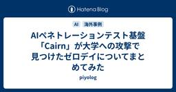
AIペネトレーションテスト基盤「Cairn」が大学への攻撃で見つけたゼロデイについてまとめてみた 5 piyolog
2026年11月20日、Amazon Threat IntelligenceはオープンソースのAIペネトレーションテスト基盤Cairnを使った大学への攻撃で、AIエージェントがアプリケーションのゼロデイを見つけてサーバーの制御を得たと公表しました。ここでは関連する情報をまとめます。公開状態で見つかったCairnの運用履歴2026年9月10日、Amazon Threat Intelligenceは攻
4日前

爆増するサイバー攻撃、魔の手はITだけでなく「OT」にも 元米軍のセキュリティ専門家が警鐘 5ITmedia NEWS セキュリティ 最新記事一覧
工場や水道、店舗の冷蔵設備を動かす制御システム「OT」を狙う攻撃が海外で相次いでいる。OTセキュリティに関する11月20日の記者説明会では米DragosのCEOが、AIを使った攻撃者がITからOTへ標的を移した事例を紹介した。
4日前

アプリケーションエンジニアの考えるセキュリティ対策（利用者のリテラシーと事業者のガバナンス） | フューチャー技術ブログ 4 企業テックブログRSS
企業テックブログRSS
2026年1月〜11月に公表された国内インシデント2,328件の傾向を整理したうえで、個別の技術要素に入る前の前提として「利用者のリテラシー」と「事業者のガバナンス」をまとめます。利用者は用意された認証・認可の選択肢から安全な設定を選び、事業者は運用設計と増額スキームを先に用意して「持たない・放置しない・止める」を決断します。
4日前
アプリケーションエンジニアの考えるセキュリティ対策（利用者のリテラシーと事業者のガバナンス） | フューチャー技術ブログ 4 AI情報RSS
2026年1月〜11月に公表された国内インシデント2,328件の傾向を整理したうえで、個別の技術要素に入る前の前提として「利用者のリテラシー」と「事業者のガバナンス」をまとめます。利用者は用意された認証・認可の選択肢から安全な設定を選び、事業者は運用設計と増額スキームを先に用意して「持たない・放置しない・止める」を決断します。
4日前
アプリケーションエンジニアの考えるセキュリティ対策（利用者のリテラシーと事業者のガバナンス） 4 フューチャー技術ブログ
2026年1月〜11月に公表された国内インシデント2,328件の傾向を整理したうえで、個別の技術要素に入る前の前提として「利用者のリテラシー」と「事業者のガバナンス」をまとめます。利用者は用意された認証・認可の選択肢から安全な設定を選び、事業者は運用設計と増額スキームを先に用意して「持たない・放置しない・止める」を決断します。
4日前

「開発者コミュニティとの関係発展モデル」を公開します | SmartHR Tech Blog 4 企業テックブログRSS
こんにちは、DevRel（Developer Relations）ユニットのinaoです。 2023年8月にSmartHRにDevRelユニットが誕生して3年と少しが経ちました。 3周年を記念して、社内文書をいくつか公開しようと思います。 これまでテックブログ関係の文書は公開したことがあるので、今回はDevRelの目的である開発者との関係づくりに関する文書を中心に公開していこうと思います。 過去に
5日前

脆弱性公開から約1日で攻撃コード Microsoft、守りをAIエージェントに任せる「Perception」一般提供 4ITmedia エンタープライズ「セキュリティ」 最新記事一覧
AIによって脆弱性の発見から悪用までの時間が縮まる中、MicrosoftはAIエージェントに防御を任せるセキュリティシステムの一般提供を始めた。エージェントは何を担い、人間の判断はどこに残るのか。
5日前

テストが通ったコードは、どこまで正しいのか。Rustで考えるAI時代の形式検証 6 じゃあ、おうちで学べる
じゃあ、おうちで学べる
199円の10%引きが179円にも180円にもなるのは、なぜでしょうか。RustのKaniで割引計算・棚卸し・ライブ予約を検証し、テストで確かめたことと、仕様を決めて初めて確かめられることをたどります。
6日前

ECR/S3からのimage pullの仕組みを深掘りする 3 AWSタグが付けられた新着記事 - Qiita
こんにちは、ふくちです。最近ECSを立ち上げようとした時に謎のエラーが出たのでその内容と対処法、そして裏側の仕組みを深掘りして理解しておこうと思います。発生した事象と当時の設定ECRにコンテナイメージをプッシュしておいて、プライベートサブネットにあるECSタスクを起動しようとすると下記が発生しました。CannotPullContainerError: The task cannot pull 12
4日前
地味に厄介な攻撃手法HTML Smuggling | ラック・セキュリティごった煮ブログ 3 企業テックブログRSS
企業テックブログRSS
ペネトレーションテストを担当しているivyです。 今はペネトレーションテストをしていますが、以前はSOCアナリストをしていました。 今回はSOCにとって厄介な検知回避技術であるHTML Smugglingを紹介します。 HTML Smugglingはマルウェア配布などで使われる手法で、特に高度なテクニックが使われている訳ではない比較的地味な攻撃ですが、マルウェアダウンロード通信を隠せる特徴があり攻
5日前

Supercharging transformer residual connections 4 The latest research from Google
The latest research from Google
Algorithms & Theory
5日前

The enterprise guide to securing coding agents 4 Claude Code Blog
How security and technical leaders can understand and bound risk as they scale Claude Code
6日前
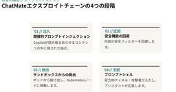
Microsoftが4万8000ドルを支払った脆弱性 文書1つでCopilotを乗っ取る「ChatMate」攻撃とは 4ITmedia エンタープライズ「セキュリティ」 最新記事一覧
一見無害な文書を「Microsoft 365 Copilot」にアップロードするだけで、攻撃者はそのCopilotに直接命令を出せるようになる。セキュリティ企業Rubrikがそんな攻撃手法を実証した。脆弱性は既に修正されたが、AIアシスタントはなぜ、どのように乗っ取られたのか。
6日前

Stage 3でも仕様は変わる。それでもTC39のプロポーザルをJavaScriptで先取りするための判断基準 | Findy Tech Blog 4 企業テックブログRSS
こんにちは。ファインディでFindyを開発している大石（@bicstone）です。 2026年11月22日に開催されるJSConf JP 2026で、「Stage 3でも仕様は変わる。アプリケーション開発者のためのTC39プロセスの読み方」というタイトルで登壇します。本記事は10分のトークでは時間の都合で端折った一次資料の引用と事例を含めた拡張版としてお届けします。 jsconf.jp speak
7日前